An overview of the ocean's "Spiny-Skinned" animals
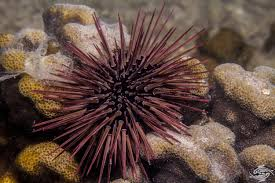
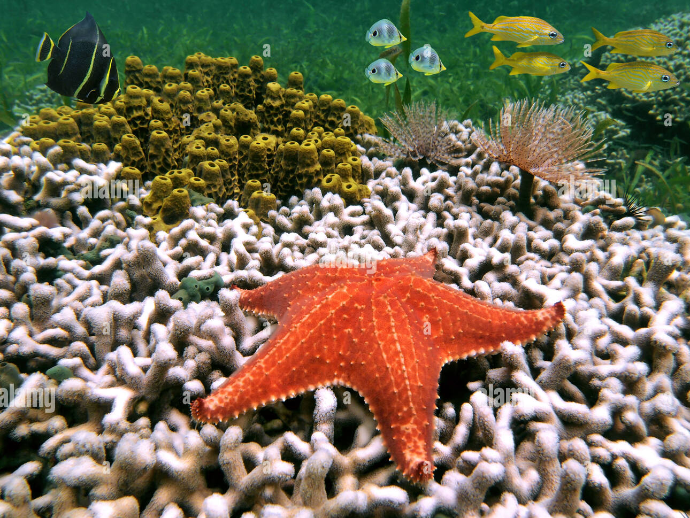
The evolutionary superpower
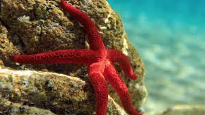
Carnivores that pry open clams, evert their stomach out of their mouth into the shell, digest the prey, and retract the stomach back in.
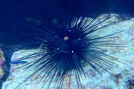
Utilize a complex, five-jawed apparatus known as "Aristotle's lantern" to scrape tough algae and kelp directly off rocks.
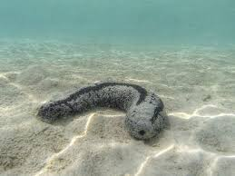
Detritivores that crawl across the seafloor swallowing sand and dead organic matter, expelling perfectly clean sand behind them.
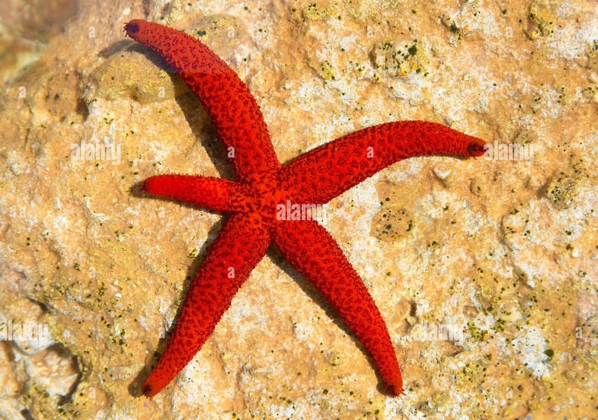
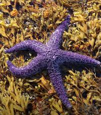
The classic, heavily-built 5-armed starfish.
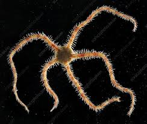
Long, whip-like, fragile arms used for rapid crawling.
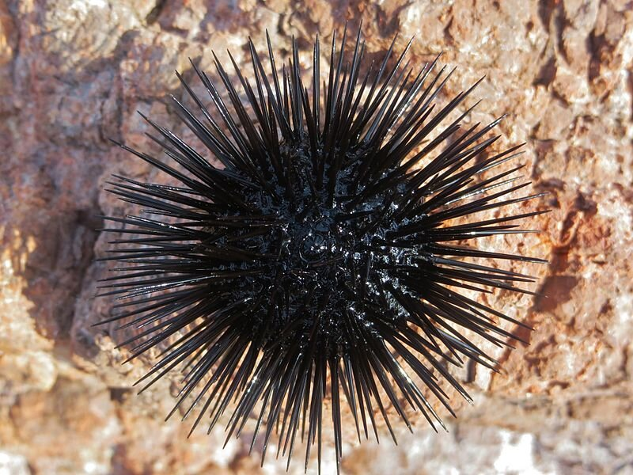
Armless, spherical bodies covered in mobile spines.
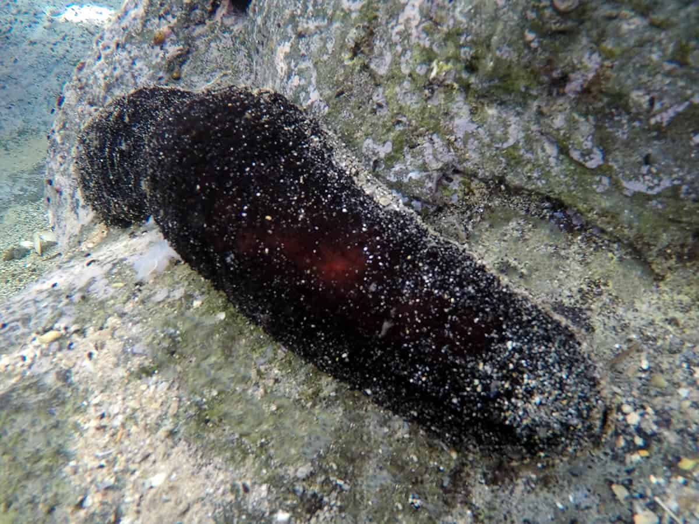
Elongated, soft-bodied organisms lacking arms.
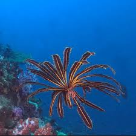
Ancient group resembling underwater ferns.
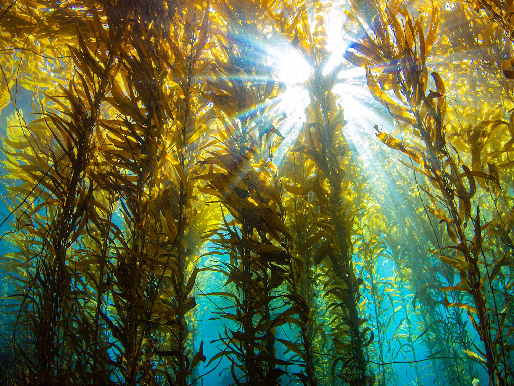
Living Species Worldwide
Presented By
Made by
Submitted To
Department of Zoology
Phylum Echinodermata Presentation